ako4all · program_md · program_kb × L1_full L2_full v3_regression · 生成于 2026-06-08 03:11 UTC
| batch | framework | n_workdirs | total | input | output | cache_read | cache_create | mean(in+out) | median(in+out) |
|---|---|---|---|---|---|---|---|---|---|
| L1_full | ako4all | 91 | 2,371,671,718 | 1,616,925,317 | 13,019,169 | 741,727,232 | 0 | 17,911,477 | 16,899,365 |
| L1_full | program_md | 26 | 849,155,803 | 556,497,949 | 4,008,126 | 288,649,728 | 0 | 21,557,925 | 20,135,392 |
| L1_full | program_kb | 29 | 862,186,004 | 588,806,420 | 4,449,536 | 268,930,048 | 0 | 20,457,101 | 16,779,975 |
| L2_full | ako4all | 89 | 488,797,793 | 252,634,467 | 2,370,046 | 233,793,280 | 0 | 2,865,219 | 102,606 |
| L2_full | program_md | 9 | 168,400,994 | 85,629,318 | 636,636 | 82,135,040 | 0 | 9,585,106 | 8,019,016 |
| L2_full | program_kb | 10 | 161,065,876 | 82,102,173 | 591,351 | 78,372,352 | 0 | 8,269,352 | 7,668,099 |
| v3_regression | ako4all | 8 | 289,890,667 | 162,250,125 | 1,361,118 | 126,279,424 | 0 | 20,451,405 | 12,534,315 |
| v3_regression | program_md | 71 | 2,541,960,958 | 1,602,006,168 | 10,812,390 | 929,142,400 | 0 | 22,715,754 | 21,744,132 |
| v3_regression | program_kb | 69 | 1,863,996,888 | 1,213,591,549 | 9,663,323 | 640,742,016 | 0 | 17,728,331 | 16,400,865 |
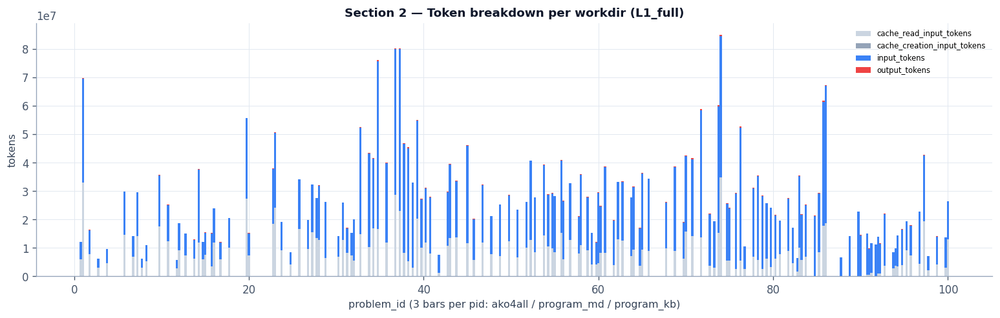
| fw | pid | total | turns |
|---|---|---|---|
| ako4all | P35 | 59,497,741 | 936 |
| program_kb | P37 | 57,161,174 | 878 |
| ako4all | P37 | 51,501,877 | 850 |
| program_md | P74 | 49,984,854 | 780 |
| program_md | P86 | 48,542,314 | 635 |
| program_kb | P76 | 47,041,016 | 616 |
| ako4all | P72 | 45,247,978 | 647 |
| ako4all | P74 | 44,786,207 | 620 |
| ako4all | P86 | 44,046,734 | 661 |
| program_kb | P38 | 40,031,278 | 587 |
| fw | pid | total | turns |
|---|---|---|---|
| ako4all | P12 | 2,942,527 | 61 |
| ako4all | P8 | 3,196,347 | 62 |
| ako4all | P3 | 3,201,818 | 57 |
| ako4all | P25 | 4,393,370 | 83 |
| ako4all | P83 | 4,683,603 | 117 |
| ako4all | P98 | 4,841,132 | 99 |
| ako4all | P4 | 4,997,782 | 96 |
| ako4all | P94 | 5,603,974 | 114 |
| program_kb | P8 | 5,715,073 | 108 |
| ako4all | P17 | 6,120,804 | 115 |
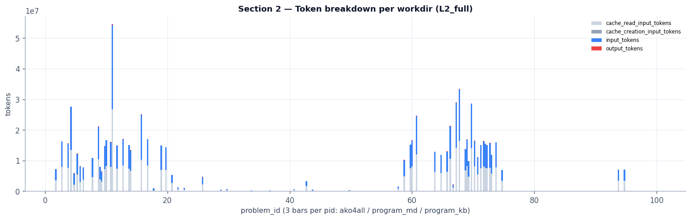
| fw | pid | total | turns |
|---|---|---|---|
| program_md | P11 | 27,774,144 | 462 |
| ako4all | P68 | 17,085,446 | 328 |
| ako4all | P16 | 14,835,832 | 278 |
| program_kb | P67 | 14,819,773 | 273 |
| ako4all | P70 | 14,624,150 | 278 |
| program_kb | P4 | 14,196,365 | 243 |
| ako4all | P61 | 12,684,595 | 226 |
| program_kb | P66 | 10,839,886 | 193 |
| ako4all | P9 | 10,794,779 | 207 |
| ako4all | P13 | 8,728,510 | 150 |
| fw | pid | total | turns |
|---|---|---|---|
| ako4all | P7 | 0 | 1 |
| ako4all | P15 | 0 | 1 |
| ako4all | P25 | 0 | 1 |
| ako4all | P27 | 0 | 1 |
| ako4all | P28 | 0 | 1 |
| ako4all | P42 | 0 | 1 |
| ako4all | P45 | 0 | 1 |
| ako4all | P62 | 0 | 1 |
| ako4all | P63 | 0 | 1 |
| ako4all | P76 | 0 | 1 |
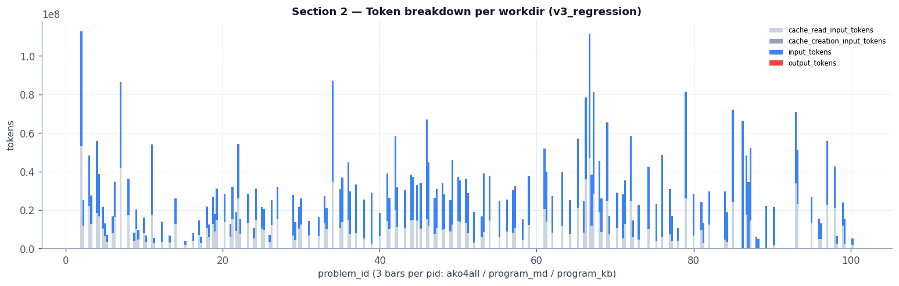
| fw | pid | total | turns |
|---|---|---|---|
| program_kb | P86 | 66,316,481 | 765 |
| ako4all | P67 | 64,550,407 | 1,136 |
| program_md | P2 | 59,431,633 | 1,020 |
| program_md | P79 | 55,415,222 | 806 |
| program_md | P34 | 52,654,820 | 802 |
| program_kb | P67 | 52,603,955 | 866 |
| program_md | P46 | 51,797,234 | 664 |
| program_md | P85 | 47,844,346 | 689 |
| program_md | P7 | 44,781,710 | 764 |
| program_md | P76 | 42,653,841 | 498 |
| fw | pid | total | turns |
|---|---|---|---|
| program_kb | P15 | 2,039,835 | 47 |
| program_kb | P11 | 2,970,491 | 61 |
| program_kb | P17 | 3,081,250 | 52 |
| program_kb | P100 | 3,399,109 | 80 |
| program_kb | P13 | 3,410,422 | 61 |
| program_kb | P10 | 3,498,748 | 68 |
| program_md | P26 | 3,603,047 | 58 |
| program_kb | P5 | 3,663,752 | 65 |
| program_kb | P98 | 3,963,581 | 86 |
| program_kb | P16 | 4,094,553 | 73 |
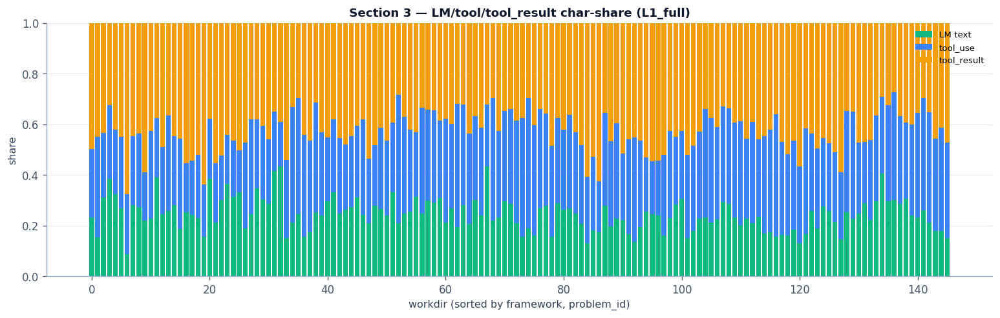
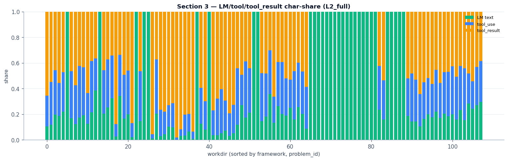
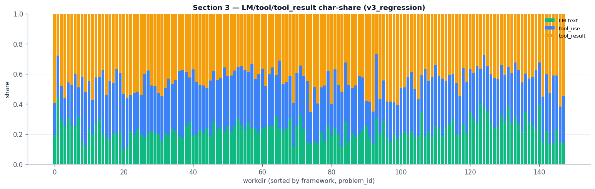
| tool | calls | avg chars/call |
|---|---|---|
| Bash | 47,747 | 349 |
| Read | 15,481 | 97 |
| Write | 13,305 | 2,935 |
| Edit | 11,162 | 1,717 |
| TodoWrite | 5,012 | 495 |
| TaskOutput | 2,404 | 52 |
| Grep | 1,612 | 162 |
| Glob | 1,181 | 61 |
| TaskStop | 661 | 24 |
| WebSearch | 305 | 90 |
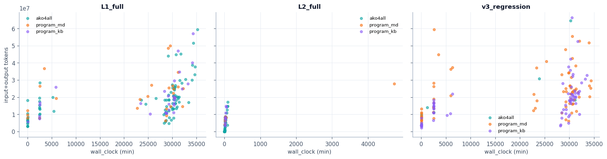
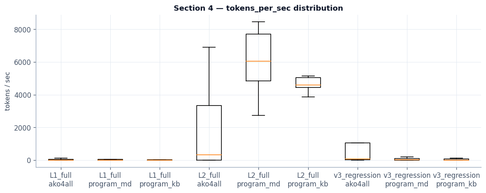
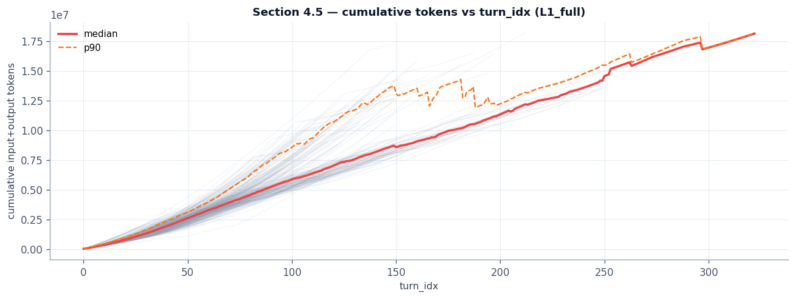
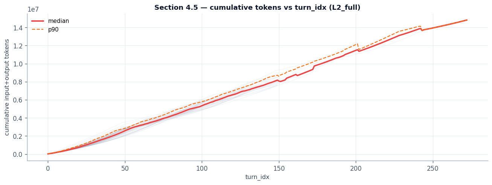
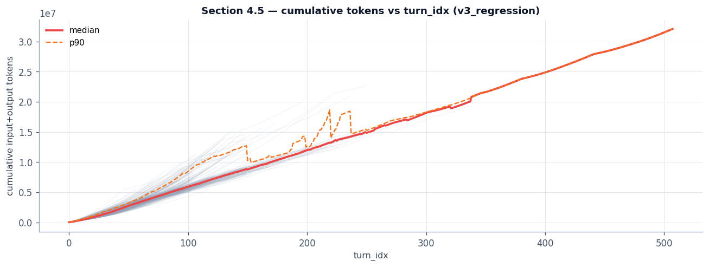
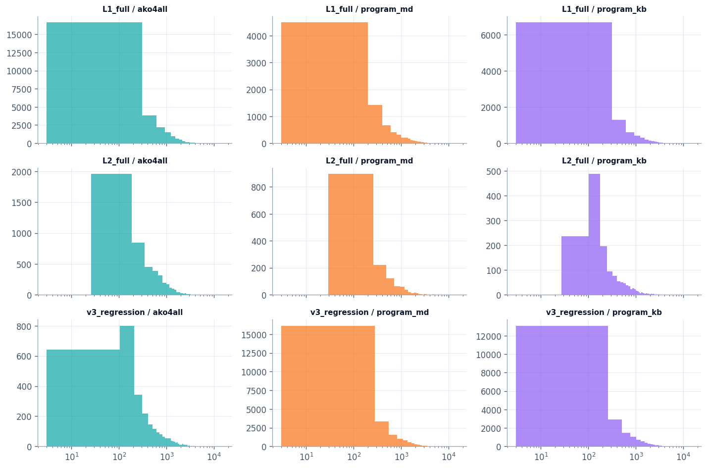
| tool | count | p50 | p95 | max |
|---|---|---|---|---|
| Bash | 47,747 | 144 | 980 | 15,231 |
| Read | 15,481 | 179 | 683 | 8,749 |
| Write | 13,305 | 1,147 | 2,972 | 13,649 |
| Edit | 11,162 | 503 | 2,389 | 11,103 |
| TodoWrite | 5,012 | 256 | 965 | 15,359 |
| TaskOutput | 2,404 | 84 | 138 | 2,371 |
| Grep | 1,612 | 177 | 1,016 | 6,343 |
| Glob | 1,181 | 165 | 471 | 11,363 |
| TaskStop | 661 | 86 | 242 | 1,081 |
| WebSearch | 305 | 65 | 707 | 3,115 |
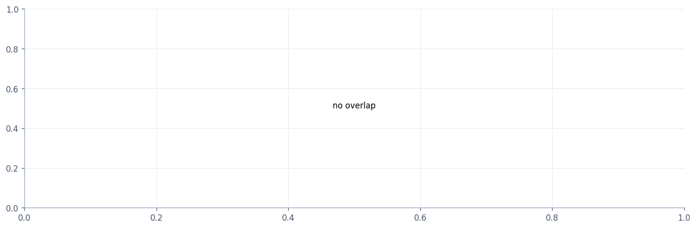
| verify json | experiments/L1_full_report/verify_all_l1.jsonexperiments/L2_full_report/verify_all_l2.jsonexperiments/L1_full_report/v3_data/verify_all_l1_v3.json |
|---|---|
| jsonl 来源 | gpu-server:~/.claude/projects/<workdir-slug>/*.jsonl |
| 生成时间 | 2026-06-08 03:11:06 UTC |
| manifest workdir 数 | 540 |
| 缺失 workdir | 0 cache/missing.csv |
| 跨 batch 重复 session | 3,674 cache/dup_sessions.csv |
| 解析错误 | 0 cache/parse_errors.log |
message.id。
deepseek-v4-flash 后端把单 response 拆成多条 jsonl 记录（text 块、tool_use 块各落一条），
只有最后一条带 usage——parse 阶段按 message.id 折叠为单 turn，否则会虚高 ~60%。
实测 size=3 cluster 占 60.7%；98.77% cluster 恰好 1 条带 usage。
(workdir_slug, session_uuid) 去重，
manifest 顺序 L1_full → L2_full → v3_regression 决定 primary batch；
其余 batch 记入 cache/dup_sessions.csv。本次去重 3,674 个 session。
| turn vs prompt 边界 | 每个 jsonl 文件可能包含多次 claude --resume 调用，
共享 sessionId 但各有独立 max-turns 预算。jsonl 里 type==last-prompt 标记每次调用边界。
per_turn.parquet 的 prompt_idx(0-based) 对应这一切片；
(workdir_slug, session_uuid, prompt_idx) 才是"单次 agent run"粒度。 |
|---|---|
| tool_result 归属 | 紧跟 assistant turn 的 user 消息中的 tool_result 块字符数
回填到该 turn 的 tool_result_chars_next，反映"这次 turn 触发的工具回流总量"。 |
model=<synthetic> 的 "API Error: 429/400" 行 SDK 会合成 usage，
这些不是真 turn 但会被计入；占比 <0.1%，未单独剔除。
cd experiments/analysis/token_usage/ make token-usage # enumerate -> fetch -> parse -> render